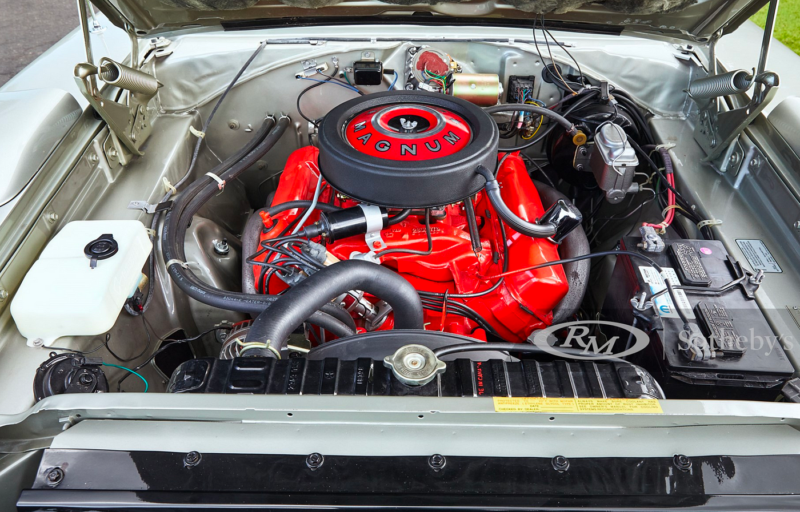

Engine Hood of Dodge Charger 1969

Engine
-
Options: The 1969 Charger was offered with a range of engines, including the 318 V8, 383 V8, 440 V8, and
the high-performance 426 Hemi V8.
-
Configuration: All engines were naturally aspirated and featured a carburetor for fuel delivery.